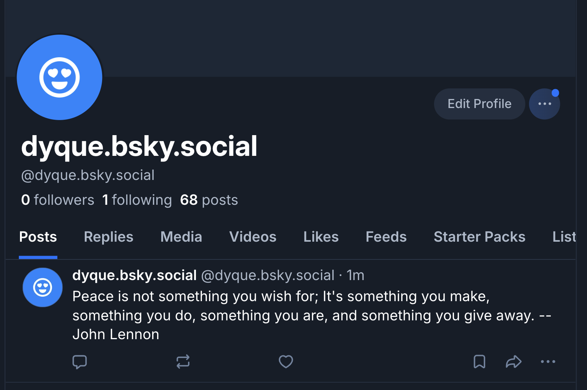
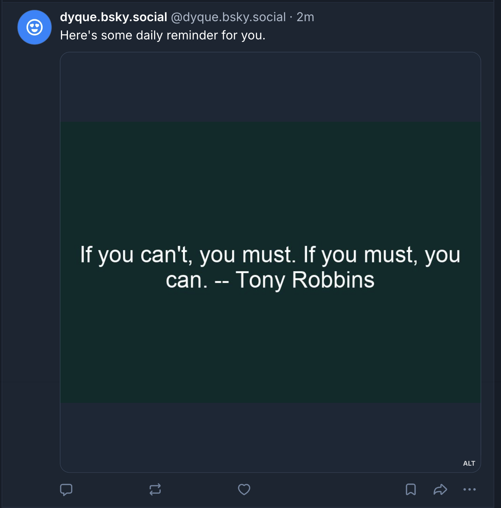
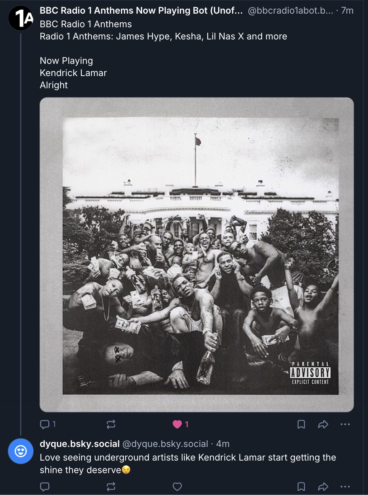
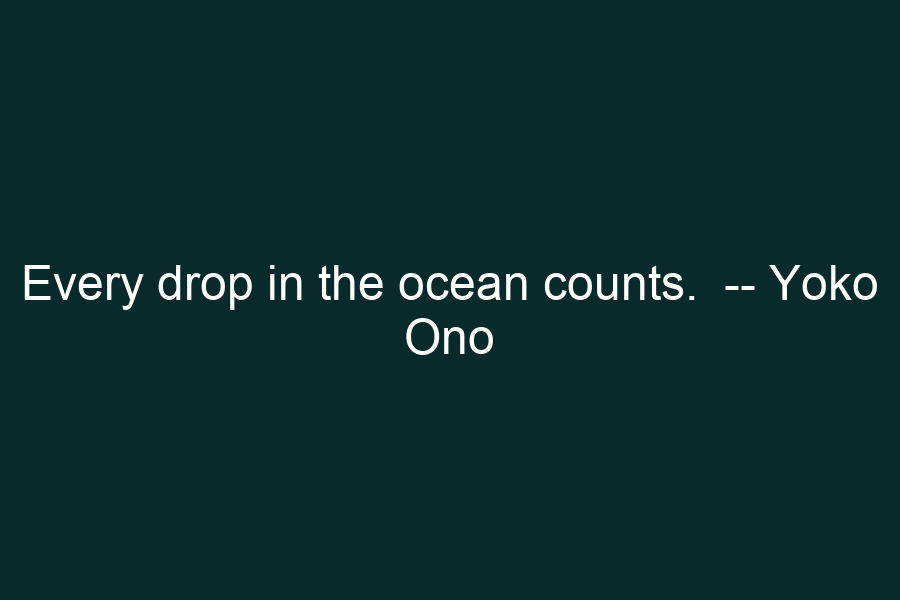

Bluesky Bot
Built a social media (Bluesky) bot which regularly posts two motivational qoutes pulled from an API (in two formats, one in text, and the other in image format) and interacts with Bluesky user's by liking and replying to their posts.
← Back to Projects View on GitHub Go to Bot's ProfileOverview and Design Choices for Text-Only Post
The text-only post uses the ZenQuotes API to retrieve a random quote. The bot logs into Bluesky using the atproto client and posts the quote directly as plain text. This demonstrates basic automation without multimedia enhancement. I chose to use motivational quotes because they are widely shareable and align with common social media engagement patterns. There are even many legit, human-run social media accounts who have thrived off of posting motivational quotes. Therefore, the simplicity of the format seemed best fit to demonstrate how easily automated accounts can blend into normal user activity.

Image 1: Bot Text-Only Post Screenshot
Overview and Design Choices for Multimedia Post
For the multimedia post, the bot generates a custom image using the Pillow library. The quote text is dynamically centered onto a styled background and uploaded as an embedded image using Bluesky’s image embedding system. The dark teal background and centered white typography create a clean, minimalist aesthetic. The visual formatting increases perceived credibility and engagement compared to text-only posts. It also partially aims to emulate the common pattern on posting quotes on social media platforms against minimalistic backgrounds.

Image 2: Bot Multimedia Post Screenshot
Overview and Design Choices for User Interactions
The bot searches Bluesky for posts containing "Kendrick Lamar" and replies to one post per execution. It also likes the post and stores replied URIs locally to avoid duplicate responses. The reply message is intentionally ironic, suggesting Kendrick Lamar is "underground," which is far from the truth. This exaggeration also emulates the social-media-typical humor, which is more likely to increase engagement with the post.

Image 3: Bot CLI Screenshot
Overview and Design Choices for External Library
I used the Python Pillow library to dynamically generate custom quote images. I created a blank image canvas, calculated text positioning, and rendered wrapped quote text onto the image using a chosen font. The generated image file is then uploaded and embedded directly into a Bluesky post. I chose a dark teal background with centered white typography to create a minimalist, high-contrast aesthetic that feels intentional and shareable. This attention to aesthetic details allows for the demonstration how automation can closely simulate human-designed content, especially today, as Generative AI becomes increasingly prevalent.

Image 4: Image Constructed with Pillow Library
Reflection
In-class Discussions
I thoroughly enjoyed our discussions around categorization of bots as either "benign" or "malicious". There seemed to be a clear agreement that there, indeed, are benign bots, which are not only harmful but also useful to most. I believe that if I had presented my bot in the discussion so that it can be classified, most would have agreed that it fell into the category of "benign" bots. On the other hand, there didn't seem to be as natural of an agreement when it came to the discussion of what counts as malicious bots. Although I had a pretty well set idea of what I believed to be "malicious" bots, when Yahvi asked us to consider what it means for people who run bots for business, I had to reconsider some of my convictions regarding the topic. Jean's mention of what the combination of bots and generative AI could look like (since it seems to be the era we're inevitably headed in, if not already there) was some food for thought.
Pre-class Readings
One of the pre-class readings introduced two common distinctions used in the literature to categorize social media bots. The first separates bots into benign and malicious (Ferrara et al., 2016). While this distinction initially felt intuitive, I began to question how stable it actually is. My own bot posts quotes and interacts with users in a mostly playful way, which would likely classify it as benign. However, the reading made me realize that intention alone may not be enough to determine moral status. A bot designed without harmful intent could still mislead, amplify content irresponsibly, or manipulate engagement dynamics. The simplicity of the benign/malicious divide may obscure more complicated ethical realities.
The second distinction, drawn from Boshmaf et al. (2013), focuses not on harm but on imitation. Social bots are defined as systems designed to pass as human by mimicking or simulating user behavior. This distinction felt more conceptually significant to me because it shifts the moral concern from what a bot does to how it presents itself. Even if my bot is not malicious, it is designed to resemble ordinary user activity in a social feed. That resemblance raises deeper questions about transparency and authenticity. The reading pushed me to consider whether the ethical tension surrounding social bots lies less in malicious intent and more in the blurring of boundaries between human and machine in public digital spaces.
Works Cited
1. Boshmaf, Y., Muslukhov, I., Beznosov, K., & Ripeanu, M. (2013). The socialbot network: When bots socialize for fame and money. In Proceedings of the 27th Annual Computer Security Applications Conference (pp. 93–102). https://doi.org/10.1145/2076732.2076746
2. Ferrara, E., Varol, O., Davis, C., Menczer, F., & Flammini, A. (2016). The rise of social bots. Communications of the ACM, 59(7), 96–104. https://doi.org/10.1145/2818717